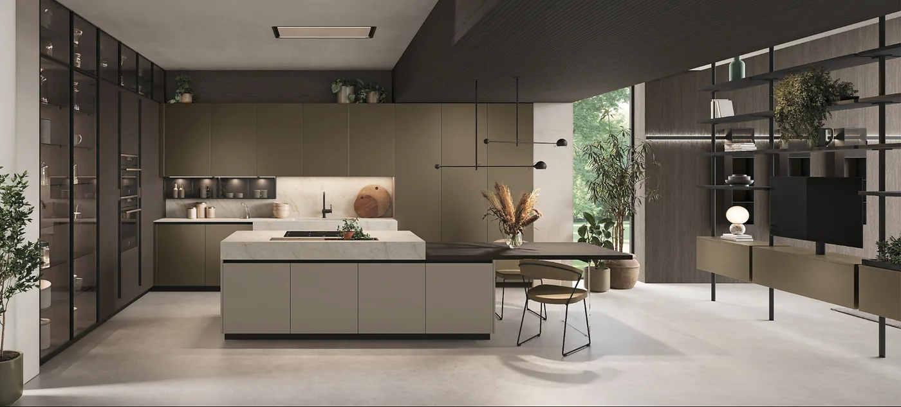
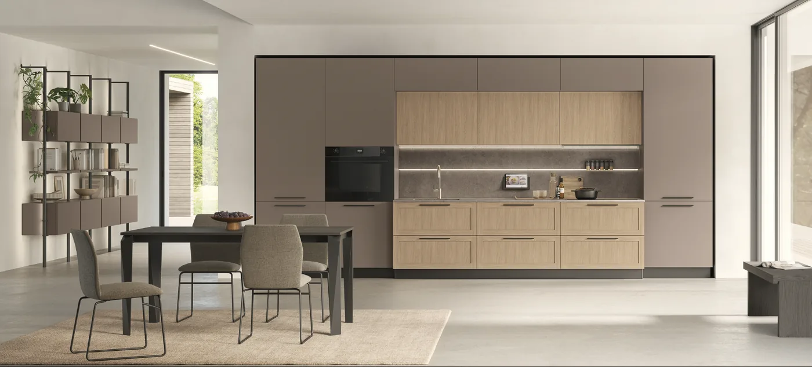
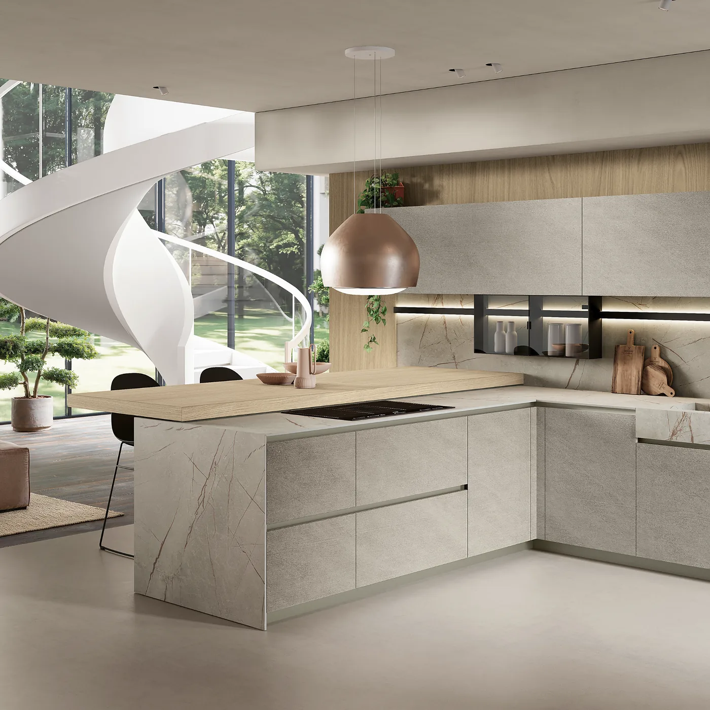
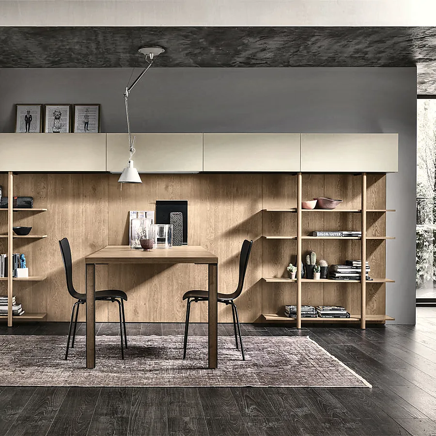
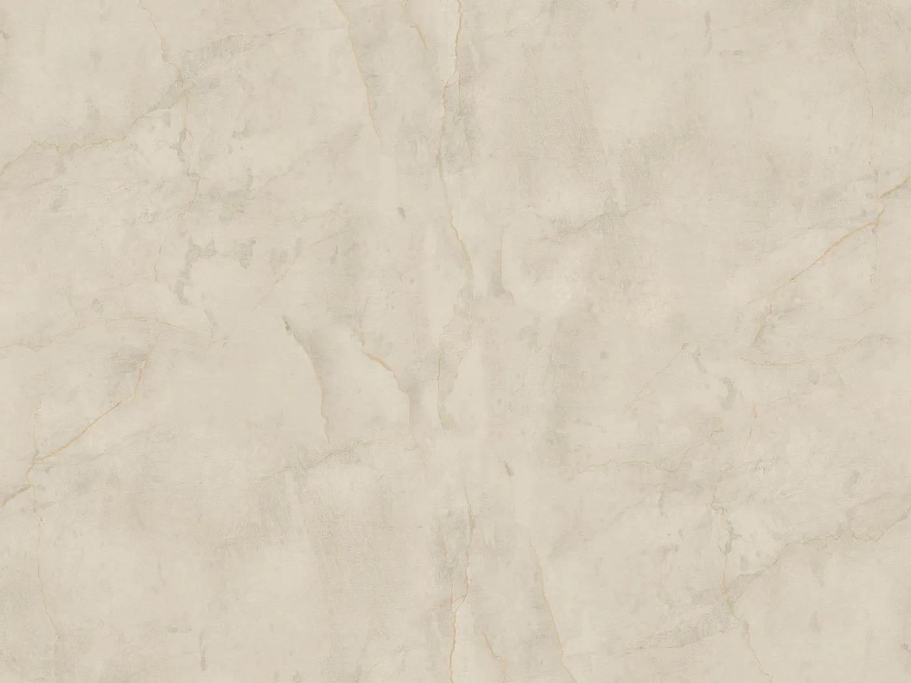
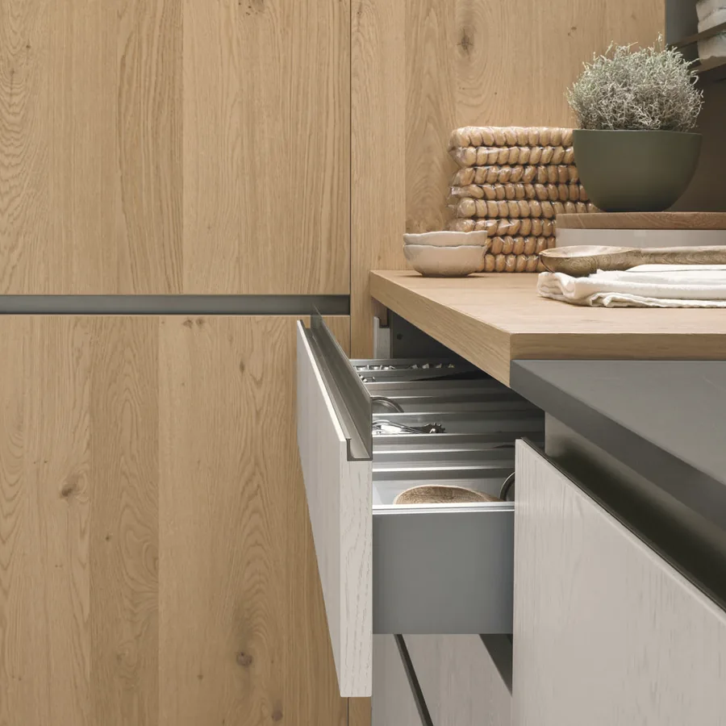

Cuisines italiennes Stosa
Des cuisines italiennes Stosa, fabriquées en Italie : de la première mesure à la dernière poignée, un seul interlocuteur.
Nous venons chez vous. Visite, mesures et devis gratuits, sans engagement. Échantillons de façades, coloris et plans de travail à voir en magasin.
Cuisine, séjour, rangements : un seul espace à penser
Les pièces s’ouvrent les unes sur les autres, et les teintes se répondent. Nous tenons la cuisine et les meubles, donc l’accord se compose en direct, devant vous, sur les mêmes échantillons. Vous partez de votre cuisine, et vous pouvez meubler toute la maison au même endroit — avec le même interlocuteur.
- Cuisine Stosa, sur mesure
- Salon canapés, relax
- Living meuble TV, bibliothèque, buffet
- Rangements sur mesure dressing, bibliothèque, meuble TV

Vous ne savez plus quel style choisir ?
Visez l’intemporel.
Un style, ça se choisit rarement à l’avance : on sait ce qu’on aime quand on le voit. Alors nous partons de deux questions concrètes, et le style sort tout seul à la fin.
1
La porte
Lisse, sans cadre ni moulure : c’est la ligne contemporaine. À cadre, avec une moulure : c’est la ligne classique. C’est le seul choix vraiment structurel, et c’est celui qui ne se change plus.
2
La température
Chaude — bois, beige, terre — ou froide — blanc, gris, laque, anthracite.
Ce qui dure, et ce qui se change. Les portes et le plan de travail restent quinze ans : on les choisit sobres. Le mur, la crédence, les tabourets et les accessoires se changent en un week-end : c’est là qu’on met la tendance. Un intérieur qui ne se date pas, c’est ça — pas l’absence de couleur.
Moderne ou classique, à votre image
Toutes les collections, sur commande, de l’entrée de gamme au haut de gamme. Lignes épurées ou charme classique, chaque modèle se compose selon votre pièce, vos habitudes et votre budget.

Cuisines modernes
Pour ceux qui aiment les surfaces nettes, les matières actuelles et les rangements invisibles.

Cuisines classiques
Pour ceux qui aiment le bois, les moulures discrètes et une cuisine qui traverse les années.
Le design accessible italien
Des matériaux de qualité et une réponse à chaque besoin, à un prix plus accessible. Idéale pour un premier projet ou une cuisine qui doit aller à l’essentiel, sans renoncer au design.
Ce qui fait la différence, dans le temps
Chaque cuisine Stosa est conçue et produite exclusivement en Italie.
De la première mesure à la dernière poignée, la même personne suit votre projet.
Stosa certifie ses cuisines et les garantit cinq ans.
Vous la rêvez. Nous la dessinons.
Vous la rêvez
Chez vous ou au magasin, on parle de vos habitudes, de vos envies et de votre budget. Rien n’est dessiné avant de vous avoir écouté.
Nous la dessinons
Nous venons relever les cotes et les contraintes de la pièce, puis nous composons avec vous : plan, façades, plan de travail, teintes. Repérer une teinte avant la visite
Nous la posons
Livraison par nos soins, pose par notre équipe ou par un artisan partenaire, réglages et finitions. Et nous restons joignables après la pose.
Le plan de travail, selon votre usage
C’est l’élément qui travaille le plus, et celui qui fait le plus varier un budget. Nous vous montrons les options côte à côte en magasin.
Les trois matières, et ce qu’elles changent

Stratifié
Large choix de décors, facile à vivre au quotidien.
€Compact
Très résistant aux chocs et à l’eau, chant plein dans la masse.
€€Céramique
Supporte bien la chaleur et les rayures.
€€€Qui fabrique quoi : les plans stratifié et compact sont fabriqués chez le fabricant de la cuisine, pour que les teintes s’accordent exactement aux façades ; la céramique et les plans en matière naturelle sont réalisés par notre marbrier partenaire.
Vos questions
Combien coûte une cuisine ?
Cela dépend surtout de la taille, des façades et du plan de travail. Après la visite et les mesures, vous recevez un devis détaillé, offert et sans engagement.
Combien de temps faut-il prévoir ?
Comptez environ huit semaines entre la commande signée, l’acompte versé, et la pose. Le délai dépend du fabricant et de la saison : une cuisine lancée hors période d’affluence sort plus vite.
Vous occupez-vous de la pose ?
Oui. La livraison est assurée par nos soins, la pose par notre équipe ou par un professionnel partenaire, avec réglages et finitions.
Puis-je voir une cuisine en vrai ?
Nous n’exposons pas encore de cuisine, mais tous les échantillons sont au magasin : façades, coloris, plans de travail. Et votre projet est dessiné chez vous, à vos mesures.
Parlons de votre cuisine.
Racontez-nous votre projet en quelques mots. Nous venons chez vous prendre les mesures et nous dessinons la cuisine avec vous. Le déplacement est offert.
